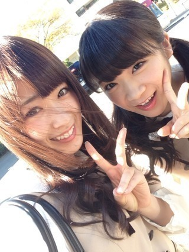
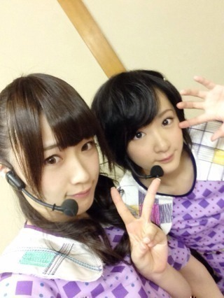
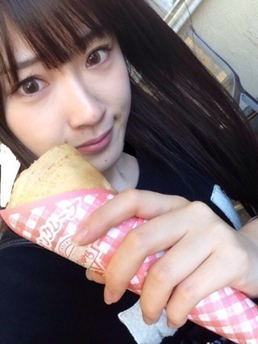
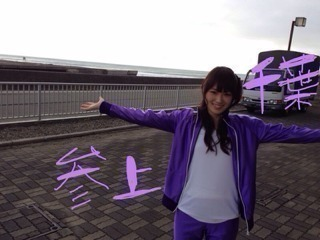
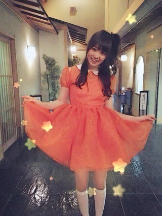

2013/1122Fri（´-`）.｡oO（か ずみん×240
.
.
.
バケラッタ\(^3^)/
いつも応援ありがとうございます！
一億人の親戚、高山一実です。
.
コメントもありがとう♭°
AKB共和国の時はちょいちょい後ろで
咳しててすみませんでした>_<
一番辛い時だったのです...
ご迷惑をかけてすみません(´;ω;`)
.
.
.
.
今日は真夏と仕事でした♪

やっぱ自然光好きや〜♡
まだ内容は言えませんが、
とても楽しかったです(っ'ヮ'c)♪うぎ
あぁ、頭良くなりたいぜー！
.
.
.
.
久々に生駒ちゃんと！

うちの母と生駒ちゃん母は
相変わらず仲良しのようで、
昨日も2人でご飯を食べに
行ったそうです。笑
生駒ちゃん、今度4人で
牡蠣食べに行こうね！！！
.
.
.
.

クレープ♡
ちーちゃんじょーさん
ひなちゃんろっちー
で遊園地行った時に食べたよ♪♪
.
私は絶対！生クリームカスタード！
たまに苺入れる(σ´∀｀)σ
.
みんなで遊園地楽しかったな〜！
なんかこのメンバーでいるだけで
楽しいんだけどね♪うぎうぎうぎ
.
年も出身もみんなバラバラなのが
すごいヽ(´>∀<`*)ﾉ
.
.
次はディズニーじゃ♡
.
.
.
.
.
.
.
よし、明日からも頑張るぞ〜！
皆さんのために...♡
.
そんなバカな・・・のMV公開されたから
よかったら見てね♡♡
めっちゃ裏エピソードある！
撮影の学校が地元で嬉しかった☆

☆★☆★☆

※この人声きもいです。
それでは！
ポジピース♪( ´θ｀)ノ
2013/11/22 00:30


コメント(516)
かずみん最高！
かずみんかわいい＼( ‘ω’)／ウオオアアアアアアアアアアアアアアアアアアアアアアーッッッッッッッッッッッッッッ！！
ちゃそだよー！(=ﾟωﾟ)ﾉ
有吉AKB共和国見たよ！
かずみん咳こんでたし、いつもよりしゃべってなかったから大丈夫かな？ってテレビ越しに心配してた！
あまり無理はしないように！
あとでまたゆっくりコメントします！
ちゃそでしたー！(=ﾟωﾟ)ﾉ
アイシテマース(￣^￣)ゞ(￣^￣)ゞ(￣^￣)ゞ
ポジピース最高でした^_^
じゅんこです！
AKB共和国見たよー！
かずみん可愛かったよー(≧∇≦)b
咳大丈夫？
無理はしちゃだめだよ！
かずみん、これからも頑張ってね！
ずっーと応援してるから。
かずみん大好きー(≧∇≦)b♡♡
ＭＶみたよー！！！
今回の曲全部いいし、ＭＶも面白いから発売日が今から楽しみ！！！
今日はこの辺で(o^^o)
これから学校行ってきます*\(^o^)/*笑
頭賢くなりたい…禿同(T_T)
咳こむのは気管支炎やから仕方ないよ…
大丈夫大丈夫＼(^o^)／
ポジティブセイ＼(^o^)／
かずみたんて一億人の親戚だったのか…親戚を好きになって…
イイデスイイデスイイデスカ？(((o(*ﾟ▽ﾟ*)o)))
無理だけはしないでねー
ちなみにカスタードクリーム大好きいちご大好き…
さらに、バナナも(((o(*ﾟ▽ﾟ*)o)))
また、コメします(((o(*ﾟ▽ﾟ*)o)))
赤チョッパー帽子のまさひろ
わー(:３っ)∋！
バケラッタヽ(^ω^)ﾉ
そんなバカな…のPV見たよ♡♡
確かにポジピースは笑ってしまった…
みんなかずみんおもしろかったって
ブログに書いてあるよね┏( ^o^)┛笑
衣装も可愛くてすごい好きな曲！
はやく発売されないかなあ(бωб)♡
クレープめっちゃ食べたい( 'o' )))
おいーっす！
ひろあん☆だよ(*・∀・*)
「そんなバカな・・・」のMV観たよー！
いやぁ、楽しいMVだねヽ(・∀・)ノ
かずみんのポジピースには、大爆笑したー！笑
何回観てもヤバいよ(๑>◡<๑)
久々の生駒ちゃんとの写真ありがとう♬
かずみんママと生駒ちゃんママ、仲良しだね♬
4人で行ったら、また教えてねヽ(・∀・)ノ
チームDで遊園地行ったんだね♪
仲良しで良きかな((*´∀｀*))
寒くなってきてるから、体調に気をつけて頑張ってね(((っ･w･)っ
じゃあ、またコメントするね！(^o^)/
un！deux！ひろあん☆
そんなバカな…のＭＶ見たよ！
めっちゃいいね！
なんか、何やってんの(´°ω°｀)
って感じのＭＶ好き(*´ω｀*)
ポジピースって言った時の若月笑ってるよね(笑)
今日から、締めの言葉を変えよっかな！
今日も明日もポジピース！
では、バケラッタ！
かずみん最高♪
かずみんの声きもくないよ！
かずみんのポジピース！！！ めっちゃ面白かったです！！！！！ ツボにはいりました笑
グレープ＆遊園地いいなヾ(＠⌒ー⌒＠)ノ
コメ久々失礼します 笑
一実さんのポジピースくそ笑ったwwww
てか言った後自分で笑ってたしwwww
そんなバカな面白いPVだね～笑
あ！衛藤さんとよく映ってたけど
あれは私信に見ます(^ω^)←
自分にとって最高のPVやな～
ではでは！
体調に気をつけて～((o(^∇^)o))
ひかるん
そうそう！
「そんなバカな・・・」を観た ぴかポンのぴかポンが、そんはバカな！な状態になったよヽ(・∀・)ノ
どうなんだろうね？笑
更新ありがとう♬
そんなバカな...のMV見たよ(^^)
今回のMVの中で一番乃木坂らしい
明るくて楽しいそして少々バカバカしい
はじけたMVで一番好きだよ♡
ポジピース♪(´θ`)ノ
そんなバカな…
みたよー！
かずみんのポジピースのタイミングが素晴らしすぎて…（笑）
あの場にいたら絶対笑うな←
かずみんの声きもくないよ！！
ぴかポンもそう言ってる！！！
そのぴかポンが相変わらずゆったんゆったん言ってるから今度またこらしめてあげてね！（笑）
それじゃ、今日も頑張りましょうー！
けんけんぱ＼(◎o◎)／
かずみん(〃'▽'〃)
最高!!
クレープ美味しそう…
食べたい、ひとくち頂戴な(´▽｀)
おぉ、そうだ
武道館のチケットゲットした
握手会の時にまた報告する
あと
ファミマのやつも応募した
１２月は乃木坂月間になる!!
今から楽しみなのだ(￣∇￣)
それじゃあ
Bye-byeバケラッタ(^o^)/~~~
ってかその４人ホント仲いいよね！まあそれほど乃木坂はすごく仲がいいんだね！ヽ(；▽；)ノいやー感動！ｗ
そんなバカなのPV千葉で撮ったんだー！ｗ
いいねー地元！！
かずみんのポジピース最高だったよ！ｗｗｗ
明日も頑張ろうね１億人の親戚！ｗ
ポジピース！！
ポジピースヽ( ´ー｀)ノ
これからもがんばってください！
ちなみ、質問なんですが、
まだ乃木坂ファムになって浅いもので、、、
バケラッタ！！ってかけ声の由来・意味
おしえてください(^-^)
ただ、本人が下向いたらアカン(笑)
こんにちは♪
遊園地いいなー
ディズニーもいいですよね～
自分もメッチャクチャ行きたいです(。>д<)
そんなバカな・・・
のポジピースの裏話、若様とまいまいblogで語られてましたよ～(笑)
今日も１日頑張ってください(^-^)/
では、バイバイです(^o^)／~~
絵文字違うけど(笑)
いやー
そんなバカな・・・
ポジピースかなりわらっちゃいましたww
あれで笑わなかった生ちゃんとななみんはすごいねww
他のみんなは、結構笑い堪えてたようにみえたww
かずみんに質問
男子が着るコートで一番好きなのなに？
ピーコート、ダッフル、モッズ、チェスター？
ちゃそでーす(=ﾟωﾟ)ﾉ
かずみん★の体調が心配です
本当に無理はしないでね！
真夏となんの仕事したのかな？
外での撮影ってことはさぞかし気持ちよかったんだろうなぁ〜
なんの撮影か早く知りたいです。
自然光最高だあああぁぁぁーーー(((o(*ﾟ▽ﾟ*)o)))
生駒ちゃんのお母さんとかずみんのお母さんと
生駒ちゃん、かずみん★の4人で食事とかたのしそうだね！連れてってぇwww
あっ(⌒-⌒; )おれ牡蠣嫌いだったんだwww
なんか牡蠣食べれません
クレープはやっぱバナナ派かなぁ
いちごも美味しいけどね！
なによりもカスタードが好き！！！♬
ディズニーいいね！楽しいよね！うんうん
そんなバカなのMVやばいよwww声出して笑ったよw
とくにポジピースのところw
一人で久々にあんなに笑ったなぁ〜
ありがとう！
今度撮影の裏話聞かせてください！
よろしくお願いします(=ﾟωﾟ)ﾉ
ポジピースならぬチャソピースV(^_^)V
ちゃそでしたー！(=ﾟωﾟ)ﾉ
アイシテマース(￣^￣)ゞ(￣^￣)ゞ(￣^￣)ゞ
かずみたんのお母様と生駒ちゃんのお母様が仲良しとかびっくりやー＼(^o^)／
乃木坂を通じて新しい出会いがあったんやねー
チームDもそういう意味では…
素敵な出会いに乾杯♪( ´θ｀)ノ
ポジピース♪( ´θ｀)ノ
かずみたんに、出会えて自分も幸せやー(((o(*ﾟ▽ﾟ*)o)))
うぎうぎやー(((o(*ﾟ▽ﾟ*)o)))
では、またね
赤チョッパー帽子のまさひろ
そしてバケラッター
７ｔｈのカップリングの
「そんなバカな・・・」のＭＶが公開されたね。
まだ観れてないですが、コメディーらしいですね。
かずみんがすごくかわいい
オレンジの衣装もすごく似合っています。
撮影の学校が地元でよかったね。
かずみん声きもくないし…
あと若様とまいまいブログにかいてあったけど
握手練習中のシーンでみんなを笑わしたらだめだよ。
ＮＧの連続になっちゃうからね。
若様がブログで堪えるのに大変だったって書いてあったよ。
若様ブログに載っている
「リバームーンマウンテン」なんかいい。
３人ともかわいいけどかずみんばっかりみてしまいます。
あと昨日ベストヒット歌謡祭がやってて
なつかしの名曲集の所でかずみんの好きな
山口百恵さんと松田聖子さんと中森明菜さんがでてたよー
いい歌声ですっかり聞きいっちゃいました。
それではまた。
ポジピース
かずみん バケラッタ ＼(^o^)／
世界人口の70分の1が かずみん の親戚ってことだね。笑
AKB共和国見たよ！
咳が出ちゃうのは仕方ないし、全然謝ることじゃないよ (=ﾟωﾟ)ﾉ
むしろそんなに辛い中でもお仕事してたんだよね (/ _ ; )
本当におつかれさま！
自然光だと表情が綺麗に映えるね ♫
情報解禁楽しみにしてます (o^^o)
生駒ちゃん のお母さんと かずみん のお母さんすっかりママ友だね。笑
クレープ美味しそう（≧∇≦）
クレープ頼むときはカスタードは外せないよね！
生クリームとカスタードのコラボとか、それもう絶対美味しいやつやん ヾ(*´Д`*)ﾉ
安定のチームD。相変わらずの仲良しだね (*^^*)
そんなバカな・・・MV見たよ！
かずみん のポジピースに笑いを堪えられないメンバーが続出してたね。笑
声も含めて好きです！
それじゃあ、寒いけど風邪ひかないようにね (^O^)／
もうどのくらい行ってないだろうか…笑
最近さむいねー
風邪引かないように気をつけて！
久々のコメントでゴメンね
色々と考えてて最近はコメントして
なかったんだけど今日からまた再開カナ？
AKB共和国観たよ
１番辛い時期だったんだ
本当無理はしないでね
健康第一だからさ
真夏さんと仕事だったんだ
最近、かずみんと真夏さん一緒の仕事
多くて嬉しい
真夏さんの握手も行ってるんで（笑）
なんの仕事だったのカナ？発表待機してるね
遊園地行ったんだ
クレープいいな〜
一緒にいるだけで楽しいって幸せだよね
そんなバカな・・・のMV観たよ
かずみんのポジピースのシーン
爆笑でした（笑）
久々に握手会でやろうカナ？（笑）
※この人声きもいです。って（笑）
そんなことないよ
ではではこのへんで
はしもー
かずみんの笑い顔もリヤクションも大好きですよ！
もちろん自虐ネタも最高です( ﹡ˆoˆ﹡ )
今度個握でお邪魔しますね！
ヨロシク(●´ϖ`●)
see you (*ﾟ▽ﾟ)ﾉかずみん
自然光の写真、
二人ともすごいかわいい！
いい写真だね♪
クレープはなんか
生地がふにゃふにゃのやつが
苦手だから最近食べてないなー(>_<)
最近はレポートに
卒研の準備に就活の準備と
忙しいのです(-_-)
それじゃ、またコメントするね！
バケラッタ！有吉AKB観たよ！風邪引いてた時なんだね…
そんなバカな…MVも観たよ！ポジピースにまいまいが大爆笑だったみたいで(笑)あれ言った後の顔が面白かった(^ー^)
それじゃまぁたぁなぁ～
バケラッタ！有吉AKB観たよ！風邪引いてた時なんだね…
そんなバカな…MVも観たよ！ポジピースにまいまいが大爆笑だったみたいで(笑)あれ言った後の顔が面白かった(^ー^)
それじゃまぁたぁなぁ～
確かに破壊力半端なかっ( ꒪Д꒪)
あれは吹いたwwww
でもあの衣装の一実さん可愛かった（＾_＾）
オレンジのやつ^_^
早くライブで聴きたいですね
有吉AKB見たよ！
やっぱり調子悪かったんだ…
なんかそんな感じしたね
でもだいぶ治ったみたいで安心してます
新曲発売楽しみにしてるよ！！！
ではまた
よくがんばったね！
後かずみんMVでポジピース三回もやってるとこまじで
笑ったわwww
これからもお仕事ガンバッテネー(oﾟ▽ﾟ)o
メンバーで遊園地、楽しそう♪
クレープも美味しそう！
ラストのオレンジ色の衣装のかずみん、可愛いです☆
いつも面白いです
自然似合います!!
へばっまずな(^-^)/~~
ポジピースわろたwww
体大丈夫ですか？
気をつけてくださいね
ではではこっぺぱん
かずみん久しぶりです。
※覚えていたら嬉しいけど
実は入院していて今朝退院しました。
テレビはおろかスマホすらも見られない状態だったので浦島太郎状態(+_+)
健康が一番だね。
かずみんも体調に気をつけてね。
これから過去のblogを見て空白の時間を埋めに走ります。
ではまた(^-^ゞ
いつも笑顔をありがとです(^^)
共和国、まだ見れてないんですが、
咳大変でしたね(;´д｀)
お疲れ様です(>_<)
生駒ちゃんと牡蠣行けるといいですね！
"そんなバカな・・・"見ました！
最高でした！！！
ポジピースれんぱつでしたね(笑)(笑)
千葉だったんですね！
本当にかずみん最高でした！(*´ー｀*)
お仕事頑張って下さい！(＾ω＾)☆ミ
ポジピース！ ♪( ´θ｀)ノ
かずみんお疲れさま♡
何のお仕事か楽しみにしてるね！
クレープのお話、前に雑誌でしてたね♪
チームD、微笑ましいよぉ＼(^o^)／
そんなバカな見たよ☆ミ
かずみん、いい役だね（笑）
かわいすぎて、瞬きできなかった(((o(*ﾟ▽ﾟ*)o)))
早くかずみんに会いたいな〜♡
だいすき！
まなったんと仕事か〜なんだろ？
気になるなぁ笑
お母さん同士で仲いいって凄いね！笑
私は牡蠣食べれないんだ(´･_･`)
あ、そんなバカな...見たよ！！
かずみんのポジピース良かった(*^_^*)♡
PVも曲も明るくてリピートしちゃいそう！
バレッタ発売が楽しみヾ(＠⌒ー⌒＠)ノ
ポジティブSay!
コメントする